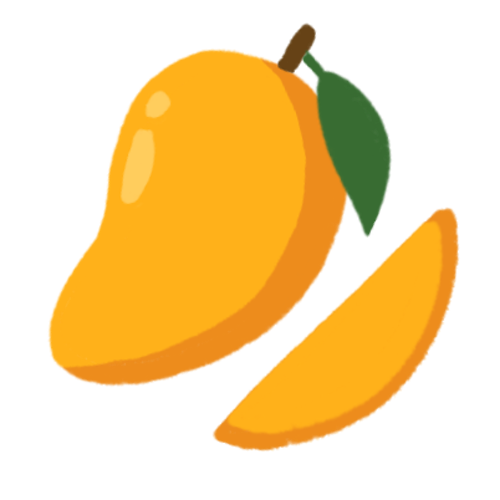

There are countless reasons to eat seasonal produce:
- Foods that are in season are typically picked at the peaks of ripeness, which leads to higher concentrations of essential vitamins, minerals, and antioxidants.
- Eating seasonally reduces the need for transportation and energy-intensive methods of cultivation and storage, leading to a lower carbon footprint.
- Choosing seasonal produce supports local farmers and markets.
- Most importantly, seasonal foods are tasty and make life more enjoyable. ♡
I hope this website inspires you to choose seasonal produce, whether new or familiar, to do good for yourself and the planet.


How this website was made
- Icons drawn on Procreate
- Pages designed in Figma
- Website coded with HTML, CSS, and JavaScript ES6